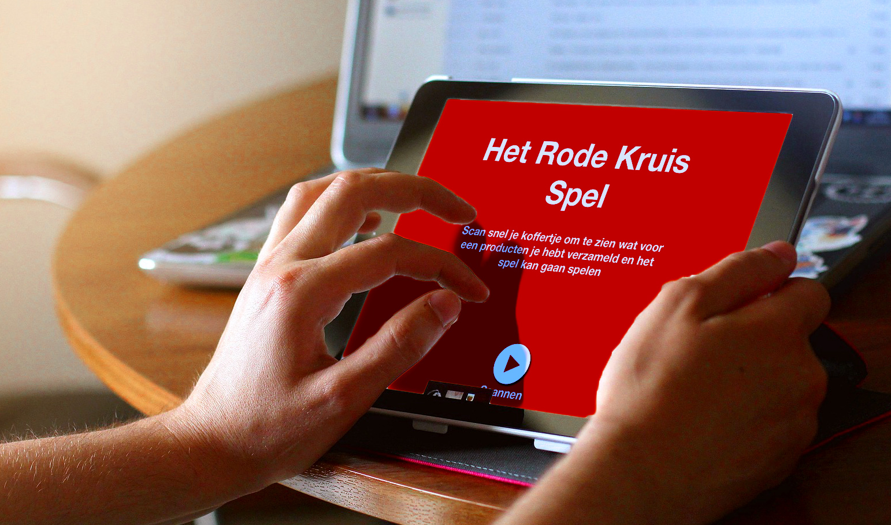

Vrijwilligers maken het mogelijk!
Vak: Project 4
project met als doel vrijwilligers te werven voor een specifieke actie/campagne. Daar ligt dan ook jouw uitdaging, hoe ga jij voor een zelf gekozen organisatie mensen werven?
Opdracht: Kies een organisatie uit die gebruikt maakt van vrijwilligers die je aanspreekt en ontwikkel hiervoor een product in de openbare of publieke ruimte waarmee jouw gekozen goede doel vrijwilligers kan werven.
Wat heb ik geleerd: Boodschap overbrengen naar gebruikers, zelfstandig werken, inleven in de klant en doelgroep.
Klant: Het Rode Kruis en Kersvers
Mijn product bestaat uit een hindernisbaan op het festival Kersvers. De gebruiker legt het parcours af met een Rode Kruis koffertje. Tijdens het parcours staan overal QR-codes die gescand kunnen worden met het koffertje. Aan het einde van het parcours staan schermen waarop je de code van het koffertje kunt scannen. Dan wordt de inhoud van het koffertje weergeven en kun je het Rode Kruis Spel spelen. Het spel gaat over EHBO op festivals en je moet de personen die langs komen helpen om beter te worden. Hiervoor krijg je punten en er loopt een tijd. Later kun je je score delen met andere en je inschrijven als EHBO'er voor op een festival.